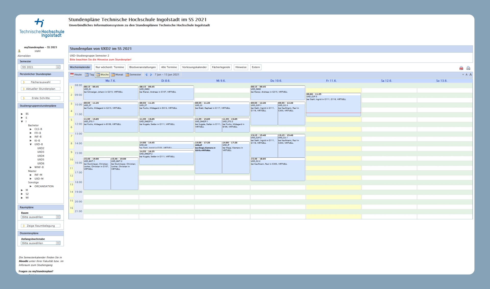
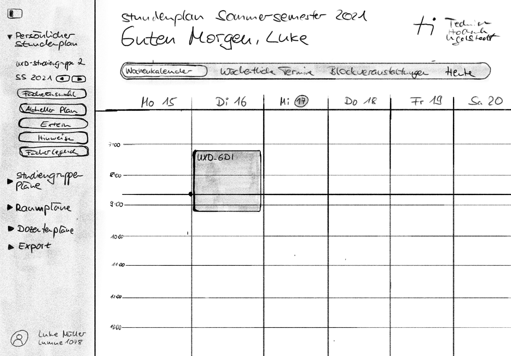
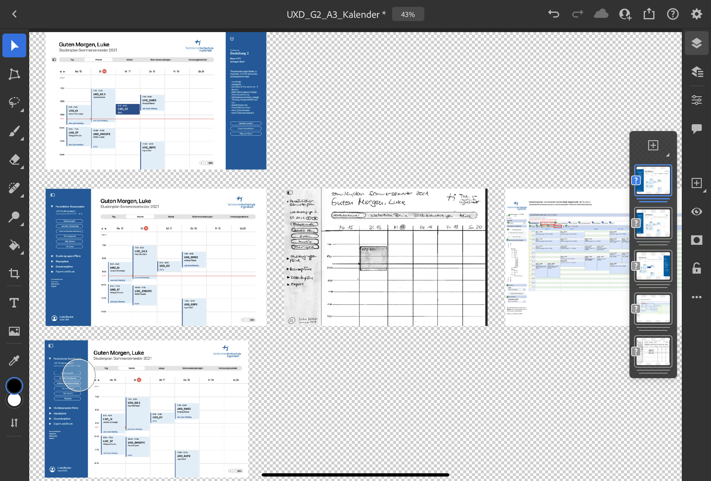
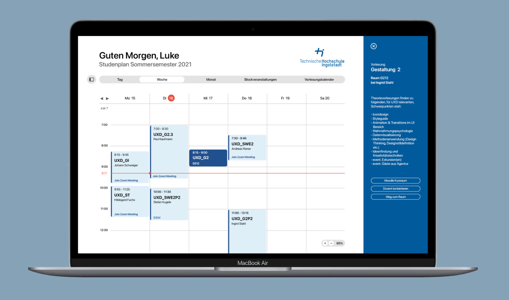

Case study
Timetable redesign
The project
This is a project from my User Experience Design degree in the course "Design 2". We were challenged to redesign the universitys timetable with the goal of creating a visually more appealing and modern interface thats easier to use while still providing all the features. In the picutre below, you see the screen design that was in use before. For this project we had a time frame of roughly three weeks.
Deign process
The starting point was the current design you can see below. I started thinking about how all the available features could be grouped in another, more conveniente way and how irrelevent options could be hidden.
1- SKETCHES
To visualize my ideas i continued with some sketeches of how I invisioned the redesigned verison with collapable side bars, so the interface can be adjusted by the user in order to remove unnecessary complexity.
2 - SCREEN DESIGN
I then started to create a high fidelity prototype in Adobe Photoshop. We were given the assignment to use Photoshop for that, otherwise I would have choosen Sketch of Figma.
Final result
The final result contains two sidebars, both collapsable. The left one inclueds the main options like selection the year and the right one can shows details of specific calendar events.
